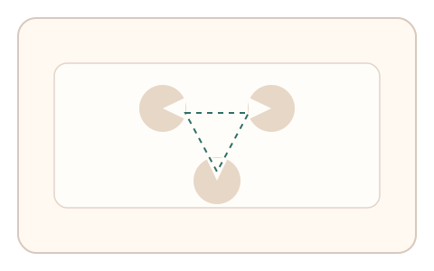
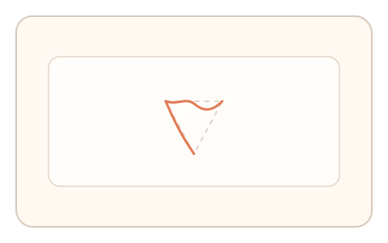
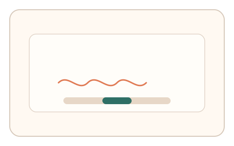

#130
E：双底座耦合 × 双信号 × 多阶段/双任务（认知偏置 + 生理/时域）
已扩展
虚轮廓描边‑抖动谱
描绘虚轮廓并记录抖动谱与曲率稳定性，综合知觉补全与生理噪声判定。
概念原文
用户描绘虚轮廓，同时系统采集微抖动谱与曲率稳定性，进行异常检测。
把“补全能力 + 生理噪声”合成双信号。
研究背景
虚轮廓依赖知觉补全（如 Kanizsa 图形），描绘路径需要持续感知。手部微颤具有稳定频谱特征，两者结合可提升鲁棒性。
核心机制
- 呈现虚轮廓线索（缺口圆/夹角）。
- 用户沿虚轮廓描边完成路径。
- 提取路径偏差与微抖动频谱。
- 综合补全准确度与抖动特征判定。
用户流程
- 步骤 1：用户看到虚轮廓线索。
- 步骤 2：拖动描边沿轮廓完成闭合。
- 步骤 3：系统分析路径与抖动谱。
判定信号
轮廓补全偏差
真实用户会沿虚轮廓完成连续曲线。
微抖动频谱
人类手部微颤具有稳定带宽。
判定逻辑
路径需贴合预期轮廓且抖动谱在生理区间；过度平滑或偏离判异常。
对抗面
- 脚本生成完美曲线轨迹
- 重放真实用户路径
防御与缓解
- 随机化线索布局与轮廓形状
- 加入轻微动态漂移
- 结合时间窗与多段路径一致性
可达性与风险
提供更粗描边与放大视图，支持触控/键控替代。
- 精细描边对运动障碍用户不友好
- 触控设备噪声影响抖动判定
可视化状态

状态 1：虚轮廓线索
用缺口形状形成虚轮廓。

状态 2：描边轨迹
沿虚轮廓描绘并采集轨迹。

状态 3：抖动谱判定
分析曲率与抖动频谱。
参考资料
Illusory contours
说明虚轮廓与知觉补全。
Physiological tremor
说明手部微颤的生理特征。